---
{
"layout": "note",
"title": "Ch5 Convection and Diffusion - part1 (Upwind Scheme)",
"journal": true,
"section": "Study",
"topic": "Computational Fluid Dynamics",
"excerpt": "Ch5 Convection and Diffusion - part1 (Upwind Scheme) Unsteady + convection = Diffusion + source term 즉 4가지 항으로 구성 되어 있고, So far, w",
"classes": "wide",
"permalink": "/blog/mechanical-engineering/computational-fluid-dynamics/ch5-convection-and-diffusion-part1-upwind-scheme/",
"study_area": "Mechanical",
"date": "2025-05-03",
"source_url": "https://jeffdissel.tistory.com/m/195",
"header": {
"teaser": "/blog/mechanical-engineering/computational-fluid-dynamics/ch5-convection-and-diffusion-part1-upwind-scheme/images/img-001.png"
}
}
---
{% raw %}Ch5 Convection and Diffusion - part1 (Upwind Scheme)
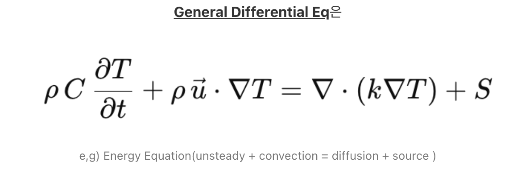
Unsteady + convection = Diffusion + source term 즉 4가지 항으로 구성 되어 있고,
So far, we've dealt w/ the
Diffusion, Source and Unsteady term
.
Now, it's time to dive into the Convectiont term, which is the most cruical but annoying.
여기서 우리는 이번쳅터에서 한가지 가정을 할 것이다.
바로,
'속도장이 fixed되었다'
라는 아주 큰 가정을 할것이다.
(그리고 ch6에서 이제 저 가정을 풀고 일반화된 convection term을 다루어보자)
자 기본적으로 우리가 풀 미분방정식은 다음과 같다.
(scalar function
( Φ)에 대한
General Transport equation or. General unsteady Convection and diffusion Equation)
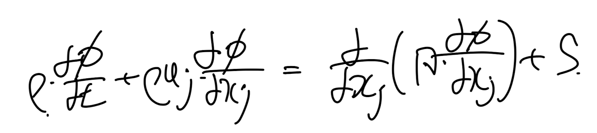
continutiy eq 을 통해서 (divergence of u = 0 ) 우리는 convection term에서 u를 divergence 안에 넣을 수 있다
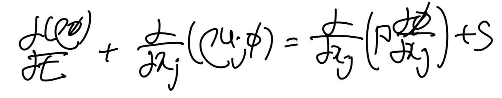
자 우리는 x,y,z,t에 대해서 위 식을 만족하는 Φ 함수값을 찾는 것이 목표이다.
(u는 x,y,z,t에 대해서 알고 있는 값이라고 가정)
여기서 우리의 이번 쳅터 목표는 convection term을 algebriac form으로 전환하는게 목표이므로,
위 미분방정식의
unsteady and source term
을 무시하자.
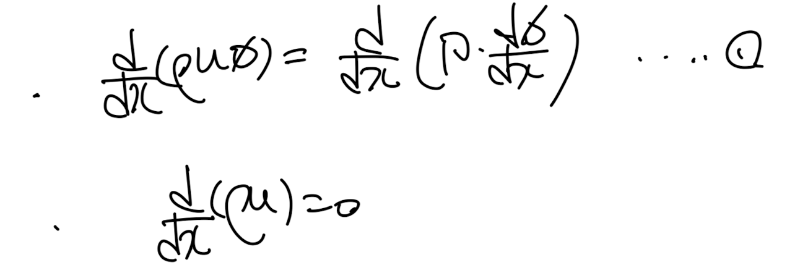
Unsteady 1D convection and diffusion Eq + continutiy Eq.
맨처음에 할일은 항상.
Discretize the domian(set the control volume)
우리가 원하는 함수값을 구하고 싶은 영역모두를 이산화하여, control volume을 정의해야한다.
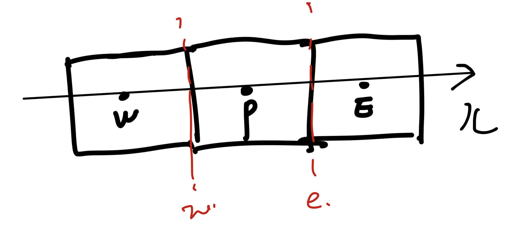
이제 control volume(p가 중심점)에 대해서 미분방정식 1을 적분해주자.
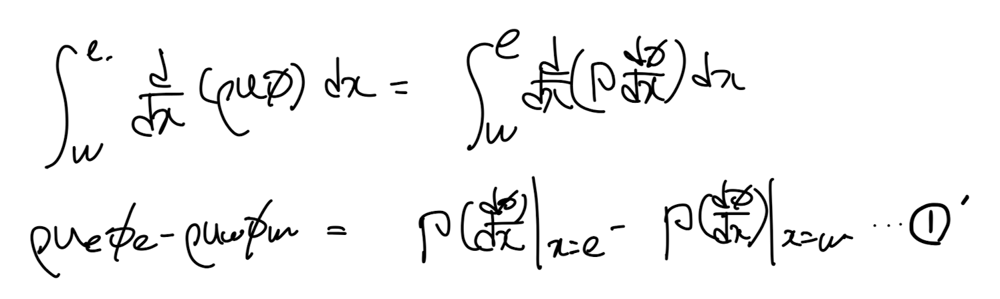
여기서 우리가 항상 하듯이 (Φ - x)profile을 가정해야하고,
(step wise profile)로 설정하게 되면
diffustion term이 x = w,e에서 정의가 되지 않는 문제가 발생함을 우리는 ch3에서 다루었다.
따라서, step wise다음으로 간단한 Linear profile로 가정한 control volume을 그리면 다음과 같다.
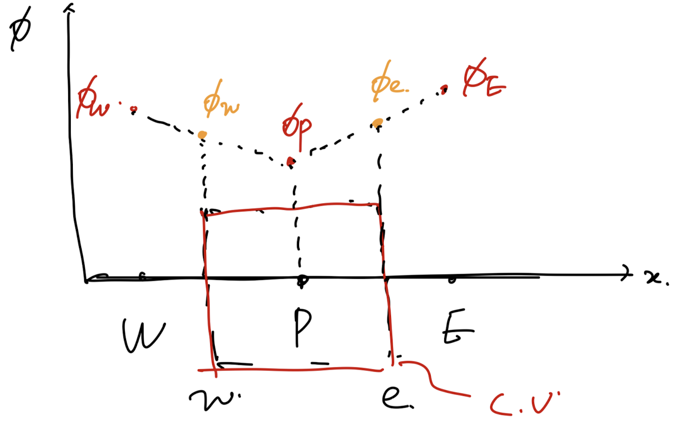
편의상 모든 노드의 간격이 동일하고 control voluem surface x = w,e는
각 노드들의 mid point라고 설정한 midway 라고 가정하자.
Convection term에서 Φe,w 도 Diffustion term에서 사용한,
Linear profile을 그대로 사용해보면 Φe,w를 다음과 같이 정의가능하다.
'Central Difference Scheme'
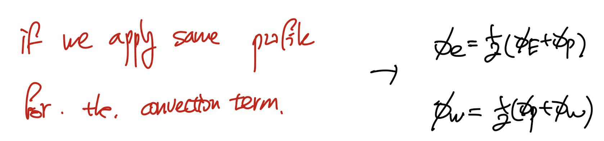
이제 1' 식에 대입하면 2번식이 도출되고, 거기에 Φe,w를 대입해주자.
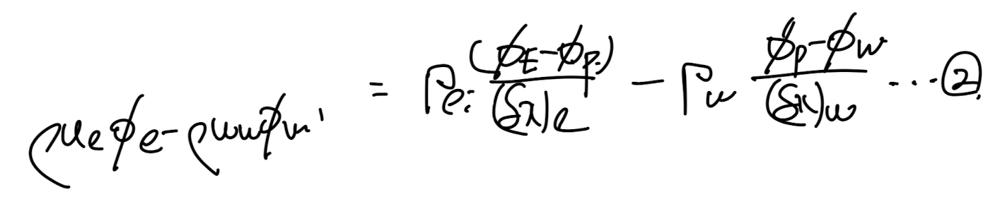
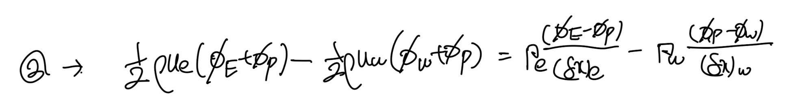
여기서 우리는 자주 등장하는 term을 다음과 같이 정의하자.
+ 실제로 물리적 의미도 존재한다.
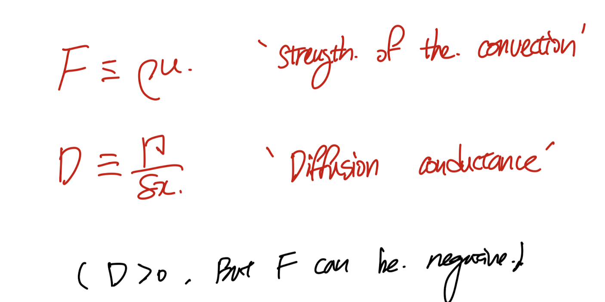
새롭게 정의한 F,D를 2번식에 대입해주자.
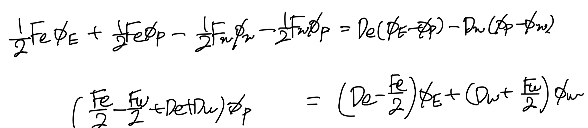
이제 우리가 원하는 algebriac form으로 변환되었다. 그리고 계수들은 다음과 같다.
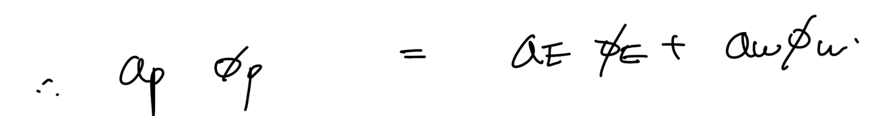
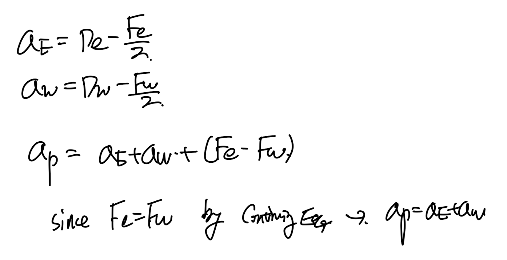
Algebriac eq form of the general transport eq upon a scalar function phi.
자 이렇게 algebriac form 으로 변환시키면 항상 하는 일이, 4 basic rule을 만족하는 지를 살펴보아야 한다.
보자마자,
(항상 문제를 일으킨)
[Rule2 positive coefficient]
"All coefficients on the Algebriac Equation aP, aE, aW ... should be positive"
이 violate 될 가능성이 존재한다.
즉, negative coeff같은 경우 Scarborough's Criteria도 만족하지 않아
Iterative Method로 해를 구할때, Divergence 한다는 것!
(ch4 - part6내용)
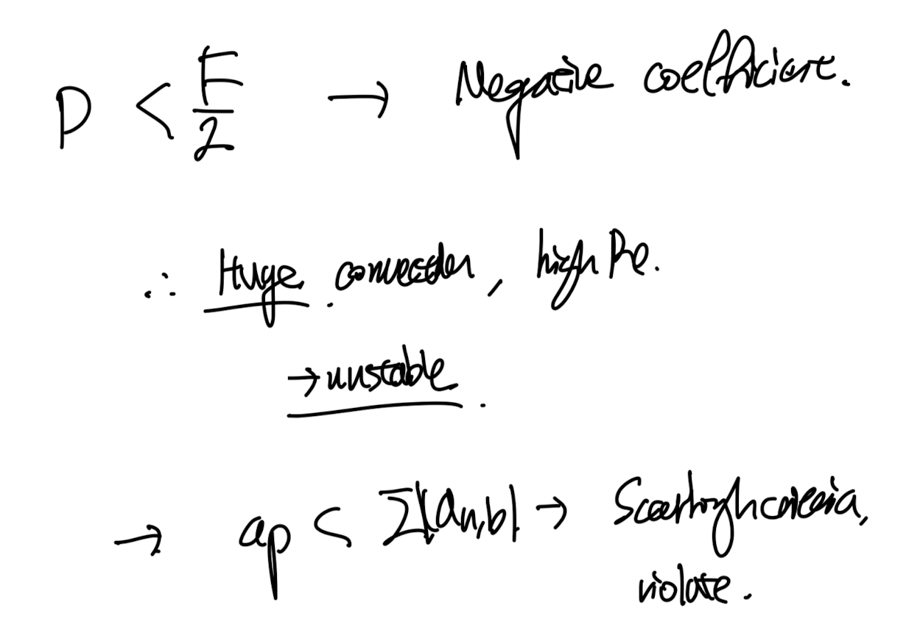
Possibility exists to violate the Rule num2, "All coefficients on the Algebriac Equation aP, aE, aW ... should be positive"
즉, 우리는 Convection profile 설정을 다시 해야한다.
잘 생각해보면 우린느 Φ - x에 대해서 Piecewise linear profile을 설정하였다.
for Diffusion and Convection both term.
여기서 우리가?
convection term은 step wise profile.
Diffusion term은 위 그대로 piecewise linear profile.
로 설정한다면?? 4 basic rule을 만족할까??
따라서,
step wise profile을 채택한 방식중 하나가 바로
upwind shceme
일단 upwind scheme에서 핵심은 strength of convection(F) 이다.
ue > 0 인 방향은 +x방향일 것이고, 그러기에 Fe가 양수일때
유체의 방향은 오른쪽을 향해 흐를것이다.
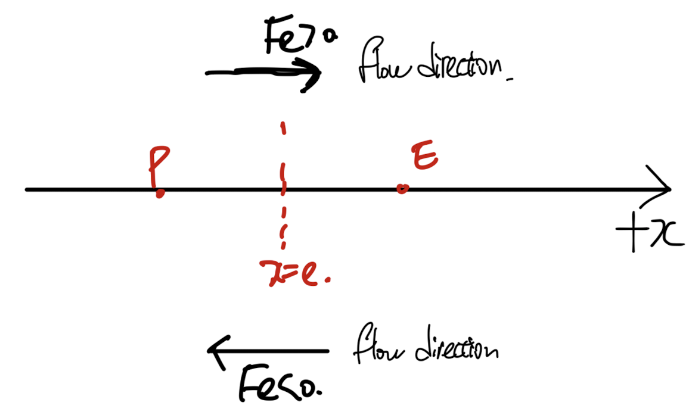
여기서 upwind shceme은 다음과 같이 step wise profile을 정의하였다. (for convection term)
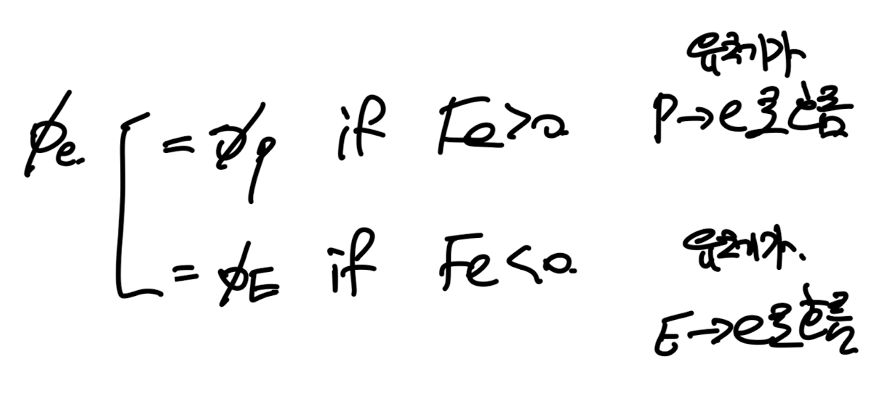
(아이디어를 살펴보면, 유체가 A->B로 흐른다고 해보자.
여기서, (
A ~ B사이의 값
)은 B의 값보다는
A의 값에 더 강하게 영향
을 받으므로,
A,B사이의 값은 전부 A인 step wise function으로 정의하는 것이다.
다시 우리 상황으로 넘어가서 Fe > 0 인 경우는 P->E로 유체가 흐르므로,
P~E 사이의 모든 값은 P에서의 값이다 라고. 설정하는 것이다.
수학이 참 대단한 도구인 것은, 위의 3문장의 논리를 한줄로 표현할 수 있다는 것이다.
우리가 비교 연산자를 special bracket으로 정의하면 다음과 같이 convection term을 표현할 수 있다.
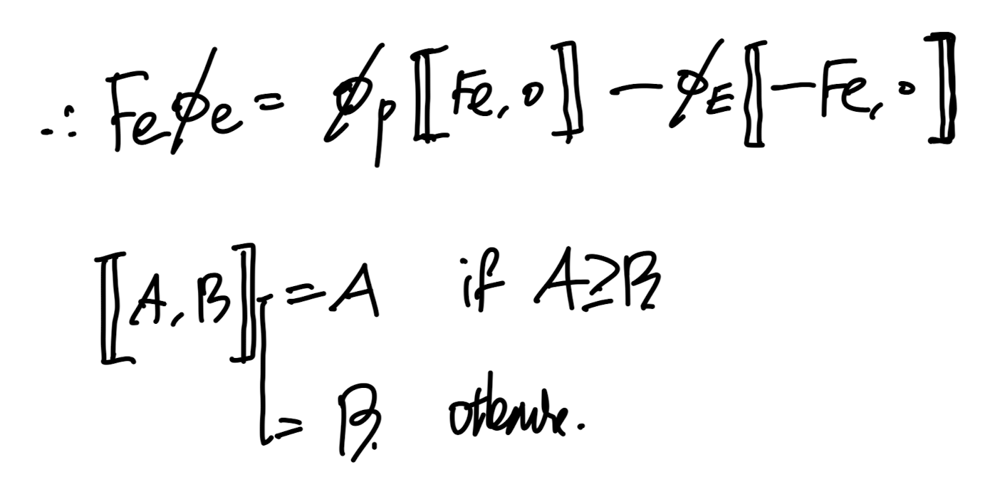
여기서 이제 맨처음에 1D steady convection -diffusion Equation에서
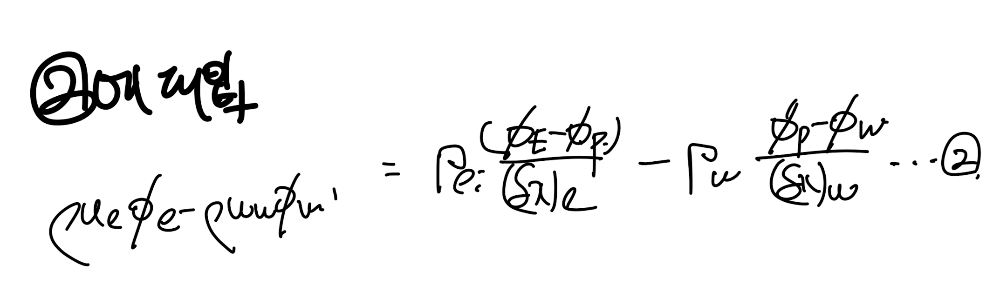
upwind scheme을 설명하느라 묻혀진 우리가 풀려고 했던 식2
적분연산을 진행한 결과인 2번식에 위 upwind scheme - convection term을 대입해주자.
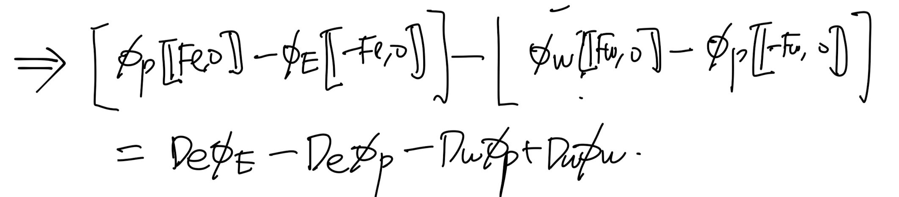
phi에 대해서 정리해주고, 우리가 원하는 algebraic eq form으로 전환.
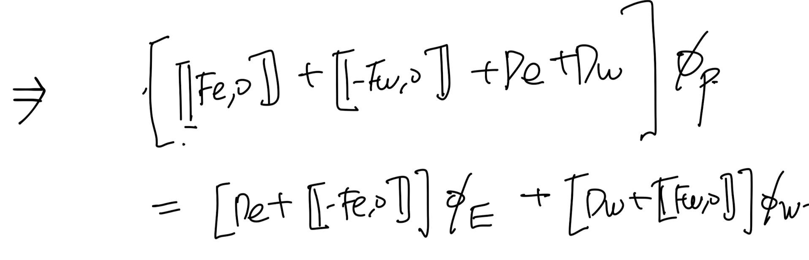
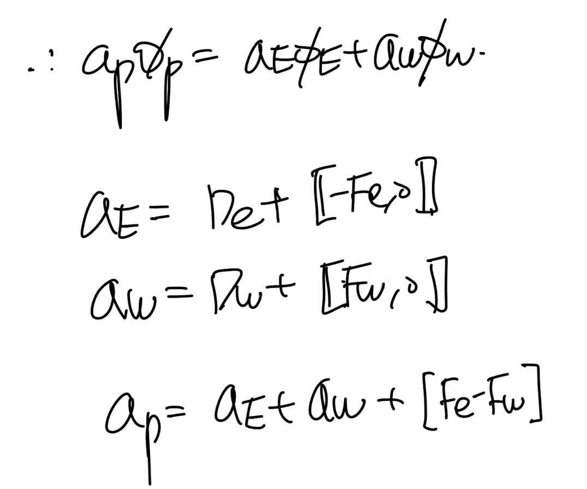
계수들을 살펴보면, Rule number 2(모든 계수 양수)를 만족함을 알 수 있다.{% endraw %}